Introdução - Visão Geral & Instalação
Boas vindas! Antes de entrar nas telas e nos botões, vale a pena contar um pouco de onde o Emma's Librarian veio, porque isso explica bastante coisa sobre o jeito que ele funciona. Mas se você já sabe do que se trata e só quer instalar, pode pular direto para a instalação.
Como tudo começou
O Emma's Librarian começou como um projeto pequeno, com um objetivo bem específico: fazer uma busca estruturada em várias bases acadêmicas de uma vez só (hoje são OpenAlex, Crossref, Scopus e Web of Science) e exportar o resultado num formato que ferramentas já consolidadas na literatura, como o bibliometrix, conseguissem ler. A ideia nunca foi refazer a análise bibliométrica, afinal o bibliometrix já faz isso muito bem, e sim facilitar a parte chata de buscar e juntar os dados de lugares diferentes, cada um com a sua sintaxe de busca e a sua interface.
Você sabe o que é o bibliometrix?
O bibliometrix é um pacote da linguagem R, criado por Massimo Aria e Corrado Cuccurullo, feito pra análise bibliométrica e cientométrica, isto é, estudar a produção científica de uma área a partir dos dados das próprias publicações (autores, periódicos, ano, citações, palavras-chave). Ele vem com o biblioshiny, uma interface gráfica que abre no navegador, então dá pra usar sem escrever nenhuma linha de código em R.
Na prática, com um conjunto de artigos exportado de uma base como a Scopus, dá pra responder perguntas como: quais autores e periódicos mais publicam sobre o tema? A produção está crescendo ou estagnou? Quais palavras-chave costumam aparecer juntas, e quais temas estão surgindo agora? Isso ajuda bastante a entender o terreno antes de mergulhar na leitura, e também a justificar, na introdução de um artigo, por que o seu tema é relevante. O Emma's Librarian exporta os artigos no mesmo formato de exportação da Scopus, que o bibliometrix já sabe ler.
Só que, usando a ferramenta no dia a dia de projetos de pesquisa, foram aparecendo outras necessidades, e o projeto foi crescendo. Hoje, além da busca, ele permite:
- gerenciar vários projetos de pesquisa ao mesmo tempo;
- acompanhar os prazos de cada projeto;
- guardar os links que você mais usa (o link da reunião do grupo, a pasta compartilhada, o documento do artigo que está sendo escrito) pra ter tudo à mão durante a escrita e as reuniões;
- manter um diário de pesquisa em cada projeto;
- ler e anotar os artigos dentro da própria plataforma;
- categorizar os artigos com critérios definidos por você e exportar essa categorização como planilha;
- fazer uma investigação massiva, que é fazer várias perguntas para vários artigos de uma vez.
Pra que serve um diário de pesquisa?
Sabe quando alguém pergunta na reunião "e aí, o que você fez essa semana?" e dá branco? O diário existe pra isso. Cada projeto tem o seu, e a ideia é você registrar ali as decisões importantes (por que tal artigo foi excluído, por que a string de busca mudou), os insights que tiver durante a leitura e qualquer outra coisa que possa ser útil lembrar depois. Na hora de falar numa reunião, escrever a metodologia de um artigo ou montar um relatório, você não depende da memória, está tudo lá com data.
E se a IA inventar uma resposta?
Essa é uma preocupação válida, e foi levada a sério. Na investigação massiva, cada resposta vem acompanhada dos trechos do artigo que foram usados pra gerá-la (os top-k trechos mais relevantes que o RAG encontrou), junto com o quão relevante cada trecho foi considerado. Ou seja, você não precisa confiar na resposta às cegas, pode ir até a evidência e conferir se ela realmente diz aquilo.
Se RAG e top-k ainda soam estranhos, não se preocupe, o Capítulo 5 explica isso com calma. Também vale dizer que os recursos de IA são opcionais: você escolhe o provedor (Ollama, rodando no seu próprio computador, ou Gemini, OpenAI e Anthropic, com a sua chave de API), e dá pra usar todo o resto da ferramenta sem configurar nenhum.
Como instalar
Hoje existem dois jeitos de baixar o Emma's Librarian: pelo botão de instalação na página inicial ou pela aba Releases do repositório no GitHub. Os dois levam pro mesmo instalador, então tanto faz.
Por enquanto só existe versão para Windows. Como o sistema é feito em Electron, gerar uma versão para Linux não deve ser complicado, mas por agora é só Windows mesmo.
A instalação em si é a de qualquer programa do Windows:
- Baixe o instalador da versão mais recente (um arquivo com nome parecido com
Emma's Librarian Setup 1.1.23.exe). - Execute o arquivo. É bem provável que apareça o aviso "O Windows protegeu o computador". Isso acontece porque o instalador ainda não tem uma assinatura digital, e o Windows desconfia de programas que ele não reconhece. Pra seguir, clique em Mais informações e depois em Executar assim mesmo.
- Escolha se o programa vai ser instalado só para o seu usuário ou para todos os usuários do computador.
- Escolha a pasta de instalação (ou deixe a sugerida) e conclua. O instalador cria um atalho na área de trabalho e no menu Iniciar.
E não precisa configurar mais nada?
Não. Não tem servidor pra subir nem banco de dados pra configurar. Na primeira vez que você abre o programa, ele cria sozinho um banco SQLite onde ficam os metadados dos seus projetos e artigos, e uma pasta onde ficam os PDFs. Tudo isso fica no seu computador, na pasta do seu usuário do Windows (C:\Users\seu_usuario\AppData\Roaming\emmas_librarian).
Observação: a pasta que você escolhe na instalação é onde fica o programa, não os seus dados. Os dados ficam sempre na pasta do usuário do Windows que abriu o programa. Na prática, isso quer dizer que se duas pessoas usam o mesmo computador, cada uma com o seu usuário do Windows, cada uma vai ter a sua própria biblioteca, separada da outra.
Saber onde os dados ficam também é útil na hora de fazer backup, que é assunto do Capítulo 8.
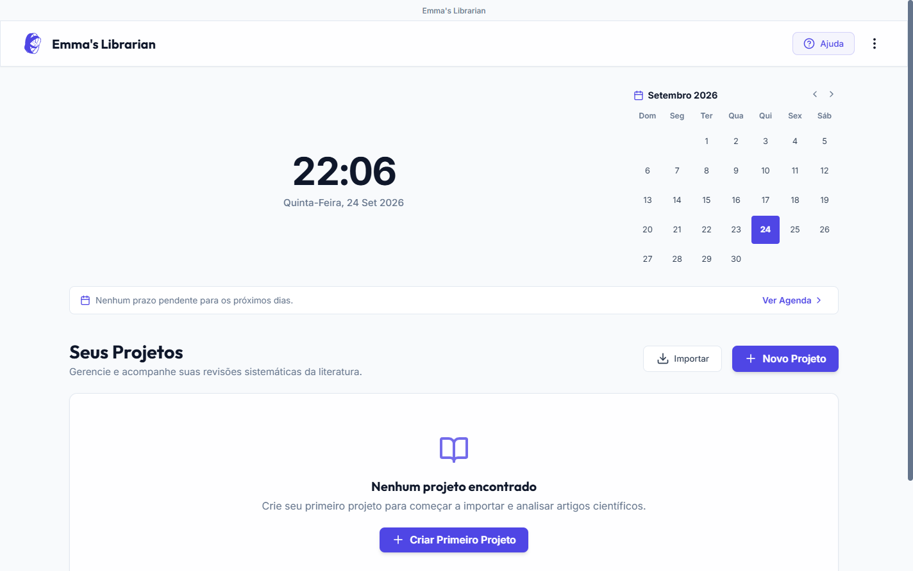
E é isso! Com o programa instalado, o próximo passo é criar o seu primeiro projeto, que é o assunto do próximo capítulo.
Capítulo 1 - Dashboard & Projetos
O dashboard é a primeira tela que aparece quando você abre o Emma's Librarian, e é pra ela que você vai voltar sempre que quiser trocar de projeto ou dar uma olhada no que está perto de vencer. A ideia é que, só de abrir o programa, você já tenha uma visão geral dos seus prazos e projetos, sem precisar entrar em nenhum projeto.
Neste capítulo vamos passar por cada parte dessa tela, de cima pra baixo. Mas se você acabou de instalar e quer começar logo, pode pular direto para a criação do primeiro projeto.
O cabeçalho
Antes do dashboard em si, vale conhecer a barra que fica no topo, porque ela aparece em quase todas as telas do sistema (a exceção é o leitor de PDF, que tem uma barra própria pra sobrar mais espaço pro artigo).
Do lado esquerdo fica a logo com o nome Emma's Librarian. Ela também é um atalho: não importa onde você esteja, clicando nela você volta pro dashboard.
Do lado direito ficam dois botões. O primeiro é o de Ajuda, e ele é mais útil do que parece. O conteúdo dele muda de acordo com a página que está aberta, então a Ajuda do dashboard explica o dashboard, a Ajuda da agenda explica a agenda, e assim por diante. Sempre que você cair numa tela nova e não souber bem o que fazer, antes de sair clicando em tudo, dá uma olhada nela.
O segundo é o menu de três pontinhos (Mais opções), que abre quando você passa o mouse ou clica nele. Ali ficam os atalhos para as outras áreas do sistema:
- Projetos, que leva pro dashboard (o mesmo que clicar na logo);
- Agenda, onde ficam os prazos de congressos, revistas e entregas (Capítulo 7);
- Biblioteca de PDFs, com todos os arquivos salvos no seu computador (Capítulo 6);
- Configurações, onde ficam as chaves de API, os modelos de IA e os backups (Capítulo 8);
- Novidades, que mostra o que mudou em cada versão. Essa janela também abre sozinha na primeira vez que você usa uma versão nova.
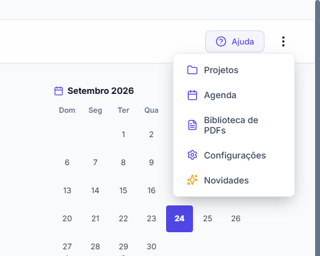
Data, calendário e prazos
A parte de cima do dashboard mostra a data e a hora e, do lado, um calendário do mês. O calendário não está ali só de enfeite: o dia de hoje fica destacado, os dias em que você escreveu algo no diário de algum projeto ficam marcados, e os dias com prazo ganham bolinhas coloridas (uma cor para cada evento da agenda). Se você passar o mouse em cima de um dia, aparece um resumo, por exemplo "Atividade no Diário • 2 Prazo(s)". Clicando num dia, você já abre o formulário para cadastrar um novo evento naquela data.
Logo abaixo aparecem os 4 prazos mais próximos que você registrou na agenda, cada um com uma etiqueta que muda de cor conforme a urgência:
- azul, quando ainda falta mais de uma semana ("Em 23 dias");
- amarelo, quando falta uma semana ou menos, ou quando o prazo é hoje ("Em 5 dias", "Hoje!");
- vermelho, quando o prazo já passou ("Venceu há 2 d").
Cada prazo tem uma caixinha para marcar como concluído. Quando você marca, ele sai da lista e o próximo da fila ocupa o lugar. Se não tiver nada pendente, aparece "Nenhum prazo pendente para os próximos dias.", o que é sempre uma mensagem agradável de ler.
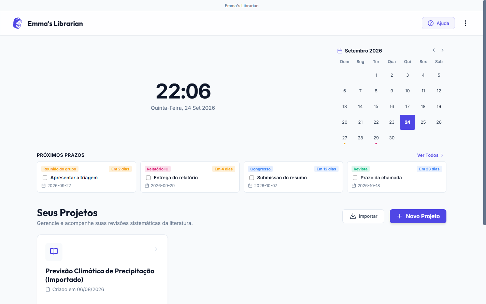
Seus Projetos
Descendo mais um pouco, chegamos na seção Seus Projetos, que tem um card para cada projeto. Cada card mostra o nome do projeto, a data em que ele foi criado e três números:
- Ativos: artigos que ainda estão esperando a sua triagem ou leitura;
- Lidos: artigos que você já marcou como lidos;
- Arquivados: artigos que você tirou do caminho, normalmente porque não passaram nos critérios de inclusão da pesquisa.
O projeto de exemplo que aparece nas imagens deste tutorial, sobre "Previsão Climática de Precipitação", tem 96 artigos vindos de duas buscas: 89 ativos, 7 lidos e nenhum arquivado. Conforme você vai triando, os números vão migrando de uma coluna pra outra, e só de bater o olho no card dá pra ter uma noção de quanto falta. Pra abrir um projeto, é só clicar no card.
E quando você acabou de instalar? Aí não tem card nenhum, claro. No lugar deles aparece um aviso de "Nenhum projeto encontrado" com um botão Criar Primeiro Projeto, e assim que você cria o projeto, o card dele passa a ocupar esse espaço.
Criando o seu primeiro projeto
Pra criar um projeto, clique em Novo Projeto, no canto direito da seção Seus Projetos (ou em Criar Primeiro Projeto, se for o primeiro). Vai abrir uma tela pedindo só uma coisa: o Nome do Projeto.
Só o nome? Sim. Busca, categorias, diário, links, tudo isso é configurado depois, de dentro do projeto, conforme você for precisando. Escolha um nome que te ajude a reconhecer o projeto no meio dos outros (o próprio sistema sugere algo como "Sistemas de Recomendação na Educação") e clique em Criar Projeto. Você é levado direto pra página do projeto novo, que é onde a maior parte do trabalho acontece.
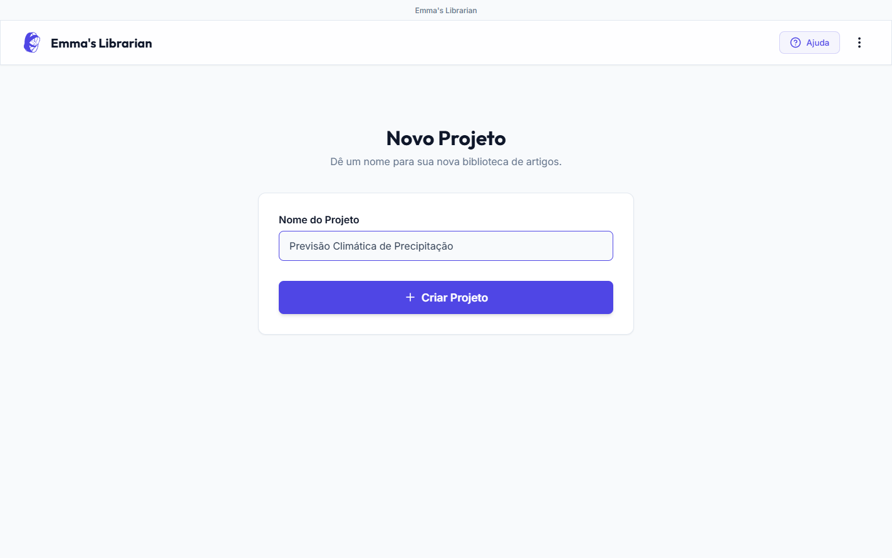
Importando um projeto (.emmapcarc)
Ao lado do Novo Projeto tem o botão Importar. Ele serve pra abrir um projeto que foi exportado de outro Emma's Librarian, num arquivo com a extensão .emmapcarc. Esse arquivo é gerado de dentro de um projeto, na opção de exportação Pacote .emmapcarc (com PDFs), e leva o projeto praticamente inteiro: os artigos com os PDFs, o histórico de buscas, as categorias e a classificação de cada artigo, as marcações e anotações feitas na leitura, o diário, os links e documentos do acesso rápido e as investigações massivas com as respostas. O que fica de fora são os prazos da agenda, que não pertencem a um projeto específico.
Na prática, isso é útil em duas situações: quando você quer passar um projeto pra outra pessoa (o orientador ou um colega do grupo de pesquisa, por exemplo), ou quando está trocando de computador e quer levar o projeto junto.
Pra importar, clique em Importar e escolha o arquivo. Se preferir, também dá pra arrastar o arquivo .emmapcarc direto pra cima do dashboard e soltar. Depois de importado, o projeto já abre sozinho, com "(Importado)" no fim do nome, pra você não confundir com algum projeto de mesmo nome que já exista na sua biblioteca.
Observação: importar um projeto não é a mesma coisa que restaurar um backup. O
.emmapcarctraz um projeto e soma ele aos que você já tem. O backup, que é assunto do Capítulo 8, cuida da biblioteca inteira.
Termos de uso e estatísticas
No fim da página tem um link discreto escrito "Ao usar o sistema, você concorda com os Termos de Uso". Vale a pena abrir pelo menos uma vez, principalmente se você pretende usar os recursos de IA. Os termos explicam o que fica só no seu computador e o que é enviado pra fora quando você usa IA ou busca em bases proprietárias, e também resumem o que cada base permite fazer com os dados dela (as políticas de mineração de texto e dados, ou TDM). Como estamos falando de material acadêmico, que muitas vezes tem regras de uso próprias, é bom saber disso antes de mandar um monte de artigos pra um modelo de linguagem.
Por último, quando você já tiver pelo menos um artigo salvo, aparecem dois gráficos com estatísticas gerais de todos os projetos juntos:
- Progresso Geral, com o total de artigos ativos, lidos e arquivados;
- Arquivos Físicos, que mostra quantos artigos têm PDF vinculado e quantos ainda estão sem.
Esse segundo é um bom lembrete. Se muitos artigos estão sem PDF, a leitura dentro da plataforma e a investigação massiva ficam limitadas, porque as duas dependem do arquivo. Como conseguir e vincular os PDFs é assunto de outros capítulos.
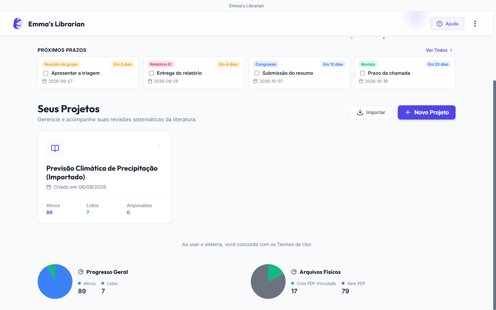
Por agora é isso. Você já conhece o dashboard e tem um projeto criado, mas um projeto vazio não serve pra muita coisa, né? No próximo capítulo vamos enchê-lo de artigos.
Capítulo 2 - Busca Federada (APIs)
Se você já fez uma revisão de literatura, provavelmente já passou por isso: a mesma busca precisa ser feita na Scopus, na Web of Science, no OpenAlex... e cada base tem a sua própria sintaxe. Na Scopus você escreve TITLE("rainfall"), na Web of Science é TI="rainfall", e no OpenAlex é outra coisa completamente diferente. Além de dar trabalho, isso abre espaço pra erro, porque é fácil esquecer um parêntese numa base e fazer, sem perceber, uma busca diferente da outra.
A busca federada resolve isso: você monta a busca uma vez só, num construtor visual, e o Emma's Librarian traduz pra sintaxe de cada base e busca em todas ao mesmo tempo. E, como você vai ver, ele mostra exatamente o que está sendo enviado pra cada uma.
Se você só veio aqui pra saber como gerar a chave de API da Scopus ou da Web of Science, pode pular direto para essa parte.
Onde fica a busca
Quando você entra num projeto, aparece uma tela com bastante coisa: o nome do projeto (que dá pra editar ali mesmo), o botão de apagar o projeto, os metadados, os botões das funcionalidades, o acesso rápido, algumas abas e a lista de artigos com os filtros. Cada uma dessas partes vai aparecer com calma nos próximos capítulos. Por agora, o que interessa é o botão Nova busca, que leva pra tela Fazer Nova Busca.
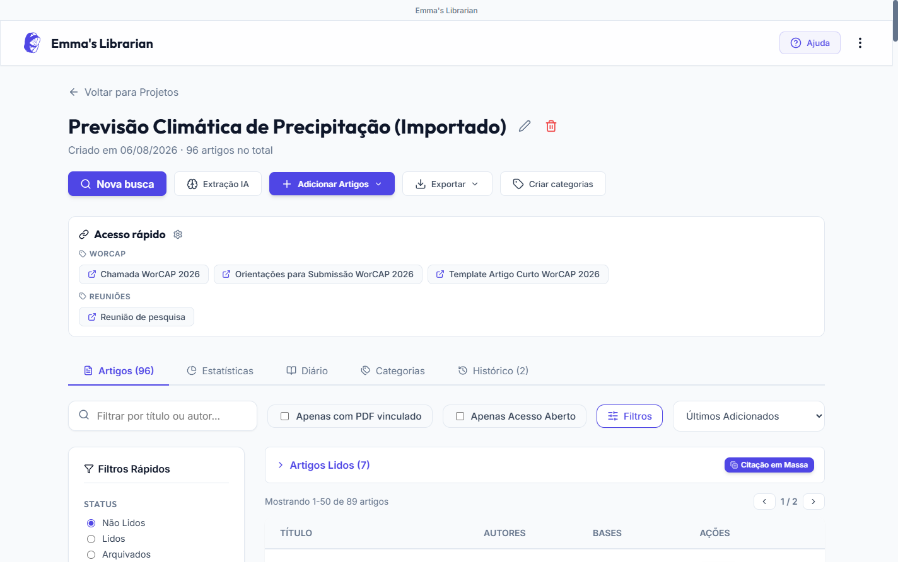
Escolhendo as bases
A primeira parte da tela é Bases de Dados Alvo, onde você escolhe em quais bases quer buscar. Hoje são quatro: OpenAlex, Crossref, Scopus e Web of Science.
OpenAlex e Crossref são abertas, então já vêm marcadas e funcionam sem configurar nada. Scopus e Web of Science são mais restritas: pra usar, você precisa de uma chave de API gerada na plataforma delas. Se tentar marcar uma dessas sem ter cadastrado a chave, aparece o aviso Chave de API Necessária, com um botão que leva direto pras Configurações. Como gerar essas chaves é assunto de uma seção mais abaixo.
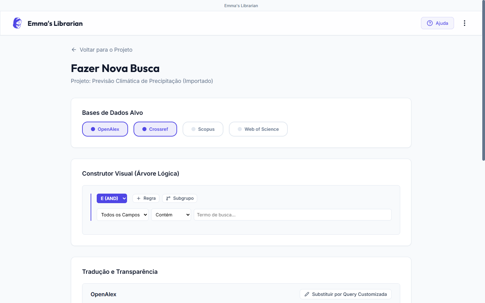
Montando a busca no construtor visual
A segunda parte é o Construtor Visual (Árvore Lógica). A busca é montada com regras, e cada regra tem três partes:
- o campo onde procurar: Todos os Campos, Título, Resumo ou Autores;
- o operador: Contém, Exato ou Não Contém;
- o termo que você quer buscar.
As regras de um mesmo grupo são ligadas por E (AND) ou OU (OR). O botão Regra adiciona uma regra nova no grupo, e o botão Subgrupo cria um grupo dentro do grupo, que é o equivalente a abrir um parêntese.
Por que árvore? Porque é assim que uma busca booleana funciona por baixo dos panos. Vamos supor que, no projeto "Previsão Climática de Precipitação", eu queira artigos que tenham "precipitation forecast" ou "rainfall prediction" no título, e que falem de "machine learning" em qualquer lugar. Escrevendo à mão, isso fica assim:
(tudo: "machine learning") E (título: "precipitation forecast" OU título: "rainfall prediction")
No construtor, isso vira um grupo principal com E, contendo uma regra de "machine learning" e um subgrupo com OU com as duas regras de título. Note que o subgrupo faz exatamente o papel daqueles parênteses.
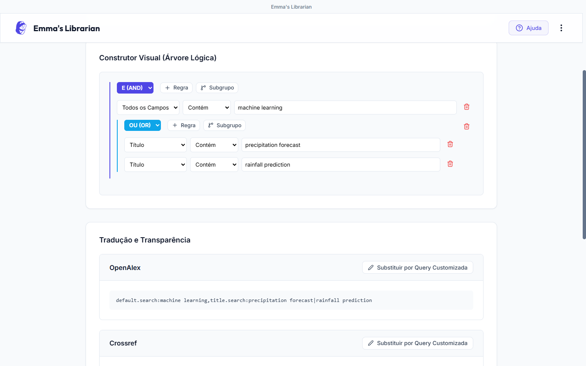
Tradução e transparência
Logo abaixo do construtor fica a parte que eu considero a mais importante da tela: Tradução e Transparência. Pra cada base selecionada, aparece a busca exatamente como ela vai ser enviada, já na sintaxe daquela base. O exemplo acima fica assim:
- Scopus:
(ALL("machine learning")) AND ((TITLE("precipitation forecast")) OR (TITLE("rainfall prediction"))) - Web of Science:
(TS="machine learning") AND ((TI="precipitation forecast") OR (TI="rainfall prediction")) - OpenAlex:
default.search:machine learning,title.search:precipitation forecast|rainfall prediction
Por que mostrar isso? Porque numa revisão sistemática você precisa relatar a string de busca exata que usou em cada base, e também porque dá pra conferir se a tradução ficou do jeito que você queria, em vez de confiar às cegas.
Na imagem só aparecem OpenAlex e Crossref porque o cartão de tradução só aparece pras bases marcadas, e ali a Scopus e a Web of Science estavam sem chave.
E a Crossref? Pois é, ela não apareceu na lista porque a API da Crossref não aceita operadores lógicos como OU e NÃO. Nesse caso, o cartão dela mostra um aviso de Incompatibilidade de Sintaxe explicando o motivo, e se você tentar buscar assim mesmo, o sistema pede pra você escrever uma busca manual pra ela ou desmarcar a base. Buscas só com E funcionam normalmente na Crossref.
Se precisar de algo que o construtor não oferece (um filtro de ano específico da Scopus, por exemplo), cada cartão tem o botão Substituir por Query Customizada. Ele abre um campo já preenchido com a tradução automática, e você só ajusta o que precisar. Se mudar de ideia, o botão Restaurar Tradução Automática desfaz tudo.
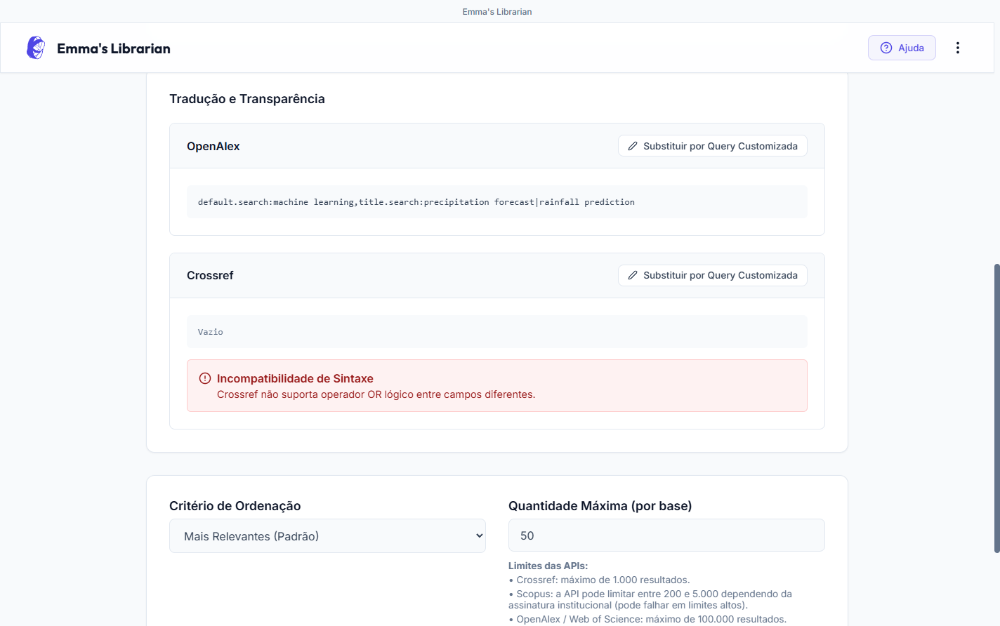
Ordenação, quantidade e a busca em si
Por último, você escolhe o Critério de Ordenação (Mais Relevantes, Mais Citados ou Mais Recentes) e a Quantidade Máxima (por base), que começa em 50.
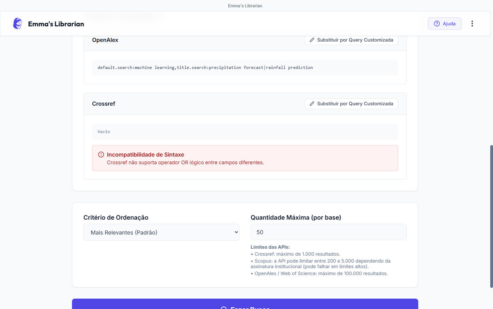
Atenção ao "por base": com as quatro bases marcadas e o limite em 50, a busca pode trazer até 200 resultados. Cada API também tem o seu próprio teto, e a tela avisa quando você passa dele:
- Crossref: até 1.000 resultados;
- OpenAlex e Web of Science: até 100.000;
- Scopus: entre 200 e 5.000, dependendo da assinatura da sua instituição. Acima de 200, a Scopus pode recusar a busca com o erro "Exceeds maximum".
Agora é só clicar em Fazer Busca. Dependendo da quantidade, isso pode levar alguns minutos, porque além de buscar, o sistema extrai e organiza os metadados de cada artigo.
Quando termina, aparece o resumo Busca Concluída!, com o total encontrado, quantos foram salvos no projeto e quantos vieram de cada base. Se alguma base falhou (uma chave expirada, por exemplo), ela aparece como Falha com a mensagem de erro, e as outras seguem normalmente.
Por que o total encontrado é maior do que o salvo?
Porque o mesmo artigo costuma aparecer em mais de uma base. O Emma's Librarian identifica esses repetidos pelo DOI (ou pelo título, quando não tem DOI) e salva o artigo uma vez só, anotando todas as bases em que ele foi encontrado. Isso também vale entre buscas: se uma busca nova trouxer um artigo que já está no projeto, ele não é duplicado.
O histórico de buscas
Toda busca feita fica registrada na aba Histórico da página do projeto. Cada registro guarda a data e a hora, a ordenação, o limite usado, quantos artigos foram salvos, a busca descrita em português (a Query Unificada), quantos resultados vieram de cada base e as queries traduzidas que foram de fato enviadas.
Isso é bem útil na hora de escrever a metodologia de um artigo ou relatório, porque você não precisa lembrar (nem ter anotado) qual string usou, em qual base, em que dia e com quantos resultados. Está tudo ali.
Cada registro também tem o botão Desfazer Busca, que remove do projeto todos os artigos que aquela busca trouxe. Cuidado que essa remoção é permanente, então o sistema pede confirmação antes.
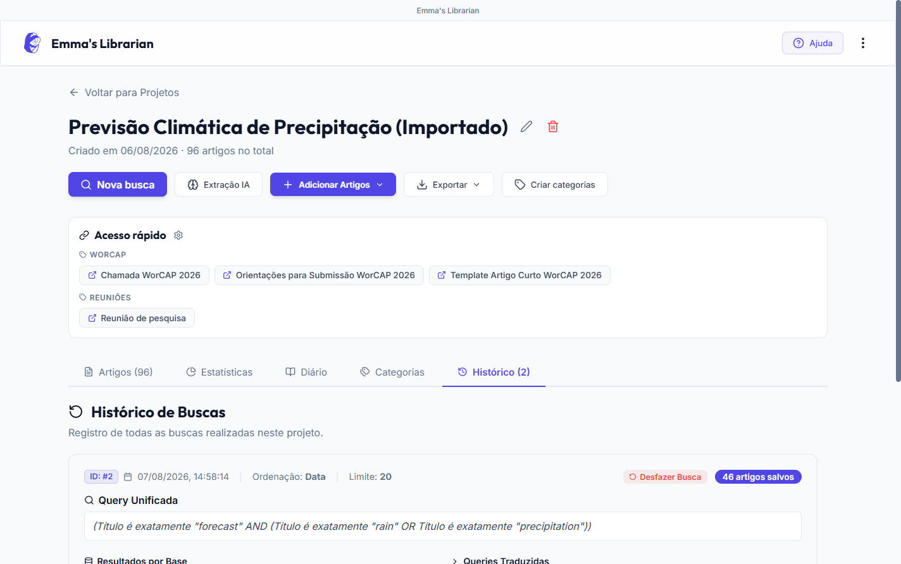
Gerando as chaves de API da Scopus e da Web of Science
As chaves ficam em Configurações (no menu de três pontinhos), na seção Chaves de API, nos campos Scopus API Key e Web of Science API Key. Elas ficam salvas só no seu computador.
A chave é gerada no site de cada empresa, e esse processo muda de tempos em tempos, então vou deixar o caminho geral e os links oficiais.
Scopus (Elsevier)
- Acesse o Elsevier Developer Portal e entre na página de gerenciamento de chaves.
- Faça login com uma conta Elsevier (a mesma usada na Scopus ou no ScienceDirect) ou crie uma.
- Crie uma chave nova, dê um nome pra ela e aceite os termos de uso.
- Copie a chave e cole no campo Scopus API Key do Emma's Librarian.
Um detalhe importante: segundo a própria Elsevier, o acesso completo à API só é liberado pra pesquisadores de instituições que assinam a Scopus. Em geral, isso significa que a busca funciona quando você está conectado à rede da sua universidade (ou à VPN dela). Os limites de uso estão na página de configurações de chave (hoje, 20.000 requisições por semana).
Web of Science (Clarivate)
O Emma's Librarian usa a Web of Science Starter API, então é pra ela que você precisa da chave.
- Acesse o Clarivate Developer Portal e crie uma conta (ou entre com a que você já tem).
- No menu Applications, registre uma aplicação nova. O nome e a descrição servem só pra você identificar a aplicação depois.
- Na página da Web of Science Starter API, peça acesso escolhendo um plano. O Free Trial permite 50 requisições por dia e não traz a contagem de citações. Se a sua instituição assina a Web of Science, o Free Institutional Member permite 5.000 por dia, com citações.
- Espere a aprovação da Clarivate. Quando sair, a chave aparece na página da sua aplicação. Copie e cole no campo Web of Science API Key.
Se quiser um passo a passo com imagens, o pessoal do CELUS tem um guia bem detalhado desse processo.
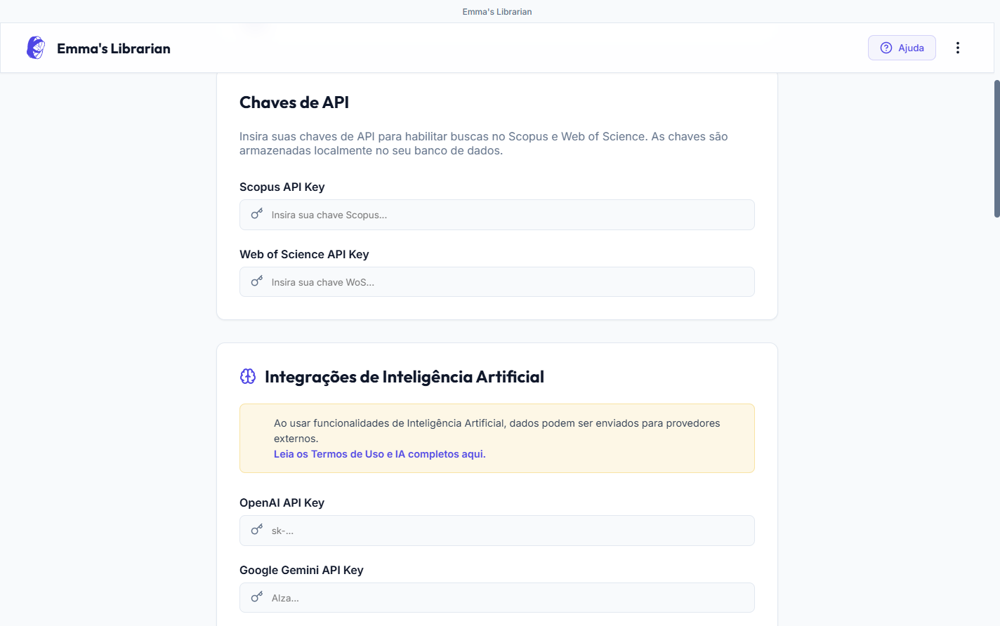
Os resultados
Fechando o resumo, você volta pra página do projeto, e os artigos encontrados aparecem na lista logo abaixo. Com dezenas de artigos na tela, você vai querer filtrar, e pra isso tem algumas ferramentas:
- o campo Filtrar por título ou autor...;
- as opções Apenas com PDF vinculado e Apenas Acesso Aberto;
- um painel lateral de filtros, com o status do artigo (Não Lidos, Lidos, Arquivados ou Todos), as bases de dados de onde ele veio, o tipo de documento e uma nuvem de palavras-chave;
- a ordenação, que pode ser por ano, título, data em que foi adicionado ou número de citações, em ordem crescente ou decrescente.
O filtro de bases, por exemplo, é útil pra ver o que só uma base trouxe. E a opção Apenas Acesso Aberto ajuda a começar a leitura pelos artigos que você consegue baixar sem depender da assinatura da instituição.
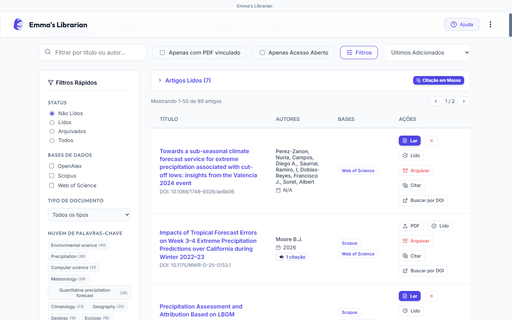
Pronto, o projeto de exemplo já tem os seus 96 artigos. Só que ninguém lê 96 artigos com a mesma atenção, e é aí que entra a triagem: decidir o que fica, o que sai e organizar o que ficou. Esse é o assunto do próximo capítulo.
Capítulo 3 - Triagem & Categorias
Depois da busca, o projeto fica com dezenas (às vezes centenas) de artigos, e agora começa a parte que dá trabalho de verdade: ler, decidir o que fica e o que sai e, pros que ficam, anotar as informações que interessam pra sua pesquisa. Qual técnica o artigo usou? Foi um estudo prático ou só teórico? Onde foi feito?
Muita gente faz isso numa planilha aberta do lado, copiando o título de cada artigo e preenchendo as colunas na mão. As categorias do Emma's Librarian são essas colunas, só que dentro do projeto e ligadas a cada artigo. E no fim, se você quiser a planilha, dá pra exportar.
Se você só quer saber como marcar artigos como lidos ou arquivados, pode pular direto para essa parte.
Criando as categorias
Na página do projeto, clique em Criar categorias. Vai abrir a janela Categorias do Projeto, onde cada categoria nova precisa de um nome e de um tipo. São quatro tipos:
- Texto: um campo livre, pra quando a resposta não cabe numa lista (um resumo do resultado, por exemplo);
- Sim/Não: pra perguntas de resposta binária;
- Lista de Opções: o artigo recebe uma opção de uma lista;
- Múltipla Escolha: o artigo pode receber várias opções da lista.
Quando o tipo é Lista de Opções ou Múltipla Escolha, aparece um campo extra onde você pode já deixar algumas opções prontas, separadas por vírgula (tipo "Qualitativa, Quantitativa"). Mas não precisa acertar tudo de primeira, porque dá pra adicionar opções novas depois, na hora de categorizar um artigo. Com o nome e o tipo definidos, clique no botão + ao lado. Cada categoria criada aparece logo abaixo, com os botões de editar e excluir.
Pra ficar mais concreto, vamos ver as categorias do projeto de exemplo, sobre previsão de precipitação. Ele tem uma de cada tipo:
- Técnica mencionada (Múltipla Escolha), com opções como LSTM, Transformer, Random Forest e Support Vector Regression, já que um mesmo artigo pode combinar mais de uma técnica;
- Estudo prático (Sim/Não), pra separar os artigos que testaram alguma coisa dos que só discutem o tema;
- País onde foi feito o estudo (Lista de Opções), com China, Tunísia e outros que foram aparecendo;
- Qual a eficácia da técnica mencionada? (Texto), pra anotar com as próprias palavras o que o artigo concluiu.
Note que uma categoria pode ser uma pergunta inteira, como a última. Na prática, as categorias acabam sendo as perguntas que você quer responder sobre cada artigo, então vale pensar nelas com calma antes de começar a leitura.
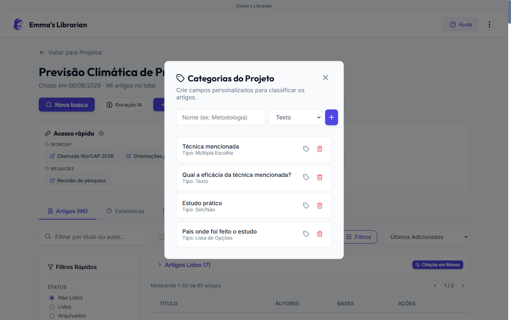
Categorizando os artigos no leitor
Um detalhe que confunde no começo: as categorias são criadas e visualizadas na página do projeto, mas são preenchidas no leitor de PDF. Faz sentido, não? É lendo o artigo que você descobre qual técnica ele usou.
Com um artigo aberto no leitor, clique no botão Categorizar, que fica flutuando no canto inferior esquerdo da tela. Vai aparecer o painel Categorias com um campo pra cada categoria do projeto, do tipo certo: um campo de texto, um seletor de Sim/Não, uma lista pra escolher uma opção ou várias opções pra marcar. Se a opção que você precisa não estiver na lista, escolha + Adicionar nova opção..., digite e ela passa a valer pra todos os artigos do projeto.
Por exemplo, no artigo "Improving S2S Precipitation Forecast over China", a categoria País onde foi feito o estudo recebeu China, Estudo prático recebeu Sim, e Técnica mencionada recebeu duas opções, Modelo de comitê e Machine Learning. Já a pergunta sobre eficácia ficou em branco, e tudo bem: nenhum campo é obrigatório.
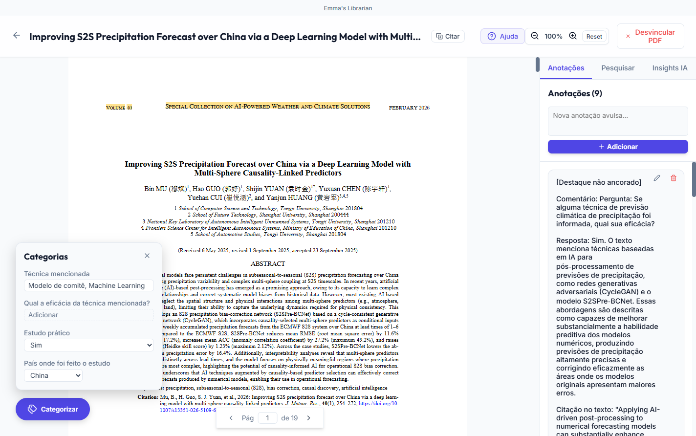
Observação: o leitor de PDF tem muito mais coisa além das categorias (marcações, anotações, busca dentro do texto), e tudo isso é assunto do Capítulo 4. Aqui o foco é só o botão Categorizar.
A aba Categorias
De volta à página do projeto, a aba Categorias mostra tudo o que você já preencheu numa tabela: uma linha pra cada artigo e uma coluna pra cada categoria. Artigos arquivados não aparecem nessa tabela, afinal eles saíram da análise.
É aqui que a planilha do começo do capítulo volta. Os botões Exportar CSV e Exportar XLSX geram um arquivo com o DOI, o título, os autores, o ano, a base de origem e o status de cada artigo, mais uma coluna por categoria (na imagem, a tabela está rolada até os artigos que já foram categorizados). Com isso em mãos, você pode montar gráficos, contar quantos artigos usaram cada técnica, cruzar país com técnica, ou levar os dados pra qualquer outra ferramenta de análise.
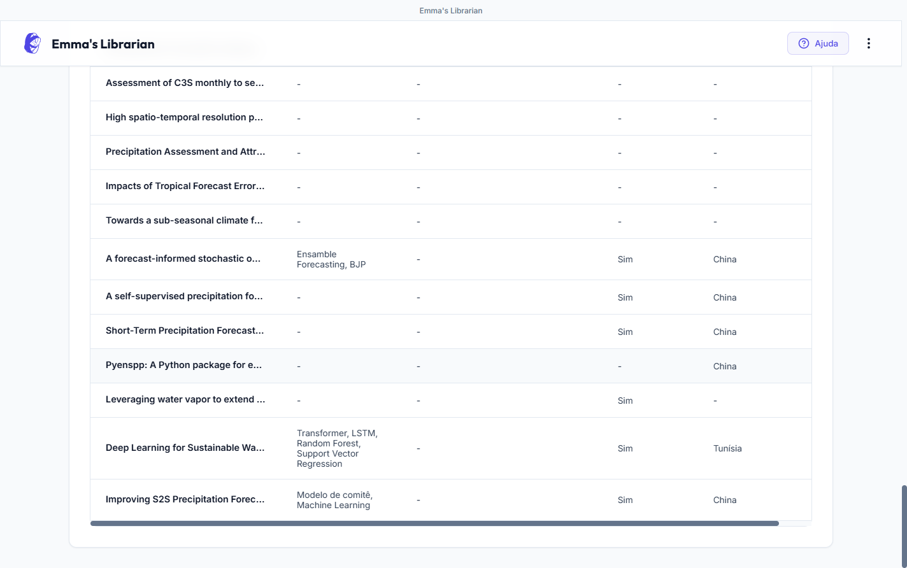
Lidos e arquivados
Conforme você for lendo, cada artigo da lista do projeto tem os botões Lido e Arquivar, que são o jeito de dizer ao sistema o que já foi resolvido.
Marcando como Lido, o artigo sai da lista principal e vai pra seção Artigos Lidos, que fica recolhida logo acima da lista. Se marcou sem querer, o botão Desmarcar devolve ele pra lista.
Já o Arquivar é pra quando o artigo não serve pra sua pesquisa. Antes de arquivar, o sistema abre a janela Motivo do Arquivamento (Opcional), perguntando "Por que este artigo não é relevante?". Você pode deixar em branco e clicar em Confirmar Arquivamento, mas vale a pena escrever alguma coisa.
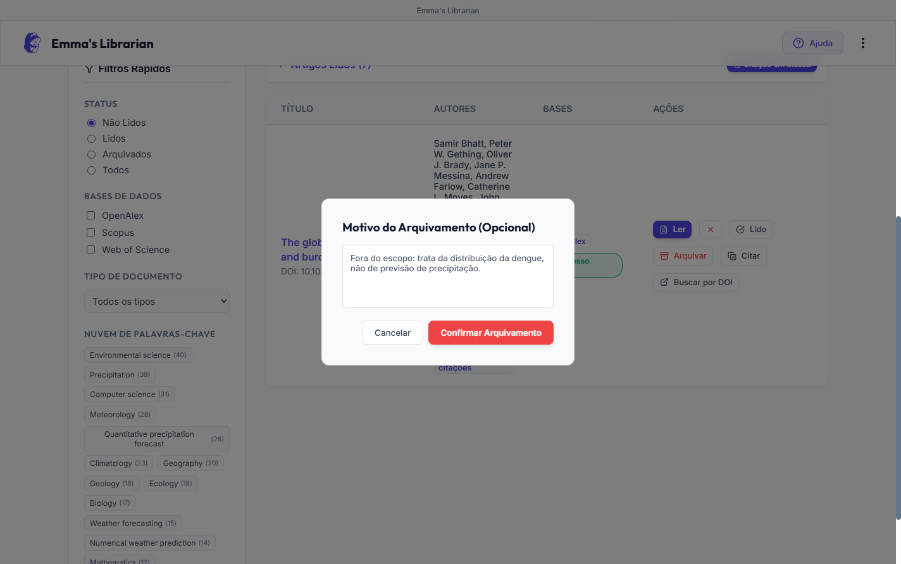
Mas por que registrar o motivo? Porque numa revisão sistemática você precisa relatar quantos artigos foram excluídos e por quê (fora do tema, só o resumo disponível, estudo de outra região, duplicado com outro artigo...). Se você anota o motivo na hora, não precisa reler nada lá no final pra lembrar por que tirou aquele artigo. O motivo fica visível na seção Artigos Arquivados, junto com o botão Restaurar, caso você mude de ideia.
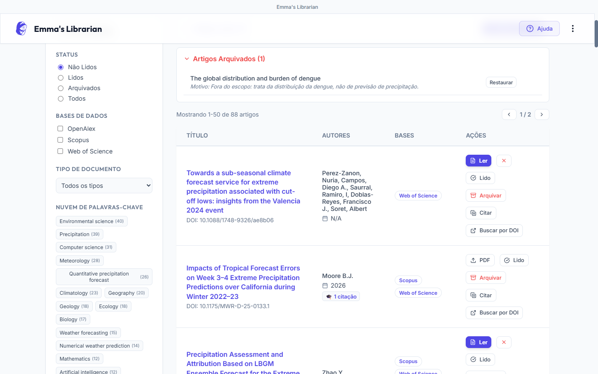
Lembra dos números Ativos, Lidos e Arquivados no card do projeto, lá no Capítulo 1? São esses botões que movem os artigos de um número pro outro.
Lembra que o botão Categorizar fica dentro do leitor de PDF? Pois é, o leitor tem bem mais coisa do que isso, e é ele que vamos abrir com calma no próximo capítulo.
Capítulo 4 - Leitor de PDF & Fichamento
Ler artigo acadêmico costuma ser uma bagunça de janelas: o PDF aberto num programa, as anotações em outro, a planilha de categorias em outro, e o gerenciador de referências pra copiar a citação. O leitor do Emma's Librarian junta essas coisas numa tela só, e tudo o que você marca ali fica ligado ao artigo, dentro do projeto.
Se você já tem os PDFs anexados e só quer ver o que dá pra fazer no leitor, pode pular direto para as ferramentas.
Primeiro, o PDF
A busca traz os metadados dos artigos (título, autores, resumo...), mas não o arquivo em si. Então, antes de ler, você precisa anexar o PDF ao artigo. Na lista de artigos do projeto, os que ainda não têm arquivo mostram o botão PDF. Clicando nele, abre a janela Anexar PDF ao Artigo, com duas opções:
- Upload do Computador, pra escolher um arquivo que você baixou;
- Selecionar da Biblioteca, pra reaproveitar um PDF que já está salvo no Emma's Librarian (isso é assunto do Capítulo 6).
E se você ainda não tem o PDF? O botão Buscar por DOI, na mesma linha, abre a página do artigo no navegador, que normalmente é o caminho mais curto pra baixar o arquivo (quando ele é de acesso aberto ou quando a sua instituição tem acesso).
Com o PDF anexado, aparece o botão Ler, que abre o leitor. Do lado dele fica um × vermelho, que desvincula o PDF do artigo.
O que dá pra fazer no leitor
O leitor tem três partes: a barra de cima, o PDF no meio e uma barra lateral à direita, com três abas. Vamos passar por cada ferramenta.
Destaques e anotações. Selecionando um trecho do texto com o mouse, aparece um menu com cinco cores de destaque e um campo Adicionar nota (opcional).... Escolha a cor, escreva a nota se quiser e clique em Destacar. Todos os destaques aparecem na aba Anotações da barra lateral, onde dá pra editar ou excluir cada um. Ali também tem o campo Nova anotação avulsa..., pra quando você quer anotar uma ideia sobre o artigo sem ligá-la a um trecho específico.
Uma dica que funciona bem é combinar um significado pra cada cor, tipo amarelo pra resultados, verde pra metodologia e azul pra trabalhos citados que você quer procurar depois. O sistema não obriga nada disso, é só um jeito de bater o olho na aba Anotações e já saber o que é cada coisa.
Pesquisar. A aba Pesquisar busca um termo dentro do PDF e lista os resultados com a página de cada um. É útil pra achar rápido onde o artigo fala de algo específico, tipo o tamanho da amostra ou o nome de um modelo.
Resumo com IA. A aba Insights IA tem o botão Gerar Resumo com IA, que gera dois resumos: uma Visão Geral do artigo, em um parágrafo, e um resumo Por Seções. O resumo é gerado uma vez e fica salvo, então da próxima vez que você abrir o artigo ele já está lá, sem gastar outra chamada de IA. Isso depende de um provedor de IA configurado, que é assunto do próximo capítulo.
Citar. O botão Citar, na barra de cima, gera a referência do artigo nos estilos ABNT, APA, Vancouver, Harvard e IEEE, e também em BibTeX, pra quem escreve em LaTeX.
Zoom. Os botões de lupa aumentam e diminuem o zoom, e o Reset volta pros 100%.
Categorizar. O botão flutuante no canto inferior esquerdo abre o painel de categorias, que a gente já viu no Capítulo 3.
Quando a base não trouxe os metadados completos
Às vezes a busca traz um artigo sem autores, sem ano ou sem resumo, porque a base não tinha essa informação. Isso atrapalha a citação, a exportação e os filtros. Como o PDF normalmente tem tudo isso na primeira página, dá pra usar a IA pra completar.
No leitor, o botão Editar Metadados abre a janela Editar Metadados do Artigo, onde você pode corrigir qualquer campo à mão. Nessa janela tem o botão Preencher com IA, que lê o começo do PDF e tenta extrair título, autores, ano, DOI, revista e resumo.
E se a IA errar algum dado que já estava certo? Ela não mexe nos campos que já estão preenchidos, só completa os que estão vazios. Além disso, nada é salvo sozinho: os valores aparecem no formulário, você confere e só então clica pra salvar.
Com o leitor você já consegue fazer o fichamento completo de um artigo. Só que, com 96 artigos, ler tudo do começo ao fim nem sempre é viável, e é aí que a investigação massiva, do próximo capítulo, ajuda bastante.
Capítulo 5 - Inteligência Artificial & RAG
A IA no Emma's Librarian aparece em três lugares: o resumo de um artigo, a extração de metadados a partir do PDF e a investigação massiva, que faz várias perguntas pra vários artigos de uma vez. As duas primeiras são simples e já apareceram no capítulo anterior. A terceira é a mais interessante, e vai ocupar a maior parte deste capítulo.
Se você só quer configurar um provedor de IA, pode pular direto para essa parte.
Antes de usar qualquer recurso de IA
Quando você usa um provedor na nuvem (OpenAI, Gemini, Anthropic ou Ollama Cloud), o texto dos artigos é enviado pros servidores dele. Artigos acadêmicos costumam ter regras de uso definidas pela editora, e algumas bases têm políticas próprias sobre mineração de texto e uso com IA. Por isso é aconselhável ler os Termos de Uso e IA do Emma's Librarian (o link fica no fim do dashboard e também nas Configurações) e os termos do provedor que você escolher. Se isso for um problema pra sua pesquisa, o Ollama rodando no seu próprio computador resolve, porque nada sai da sua máquina.
Resumo e extração de metadados
O resumo é gerado no leitor, na aba Insights IA. O sistema extrai o texto do PDF, manda o começo do artigo (algo em torno de 80 mil caracteres, o que cobre a maior parte dos artigos) pro modelo de linguagem e pede duas coisas: uma visão geral em um parágrafo e um resumo por seções. O resultado fica salvo junto do artigo.
A extração de metadados funciona de um jeito parecido, só que com um pedaço menor do texto (o título, os autores e o resumo costumam estar logo no começo) e pedindo campos específicos: título, autores, ano, DOI, revista e resumo. Como vimos no capítulo anterior, ela só preenche os campos vazios.
Nos dois casos é uma chamada só, com o texto inteiro (ou quase) indo junto. Isso funciona pra um artigo. Mas e pra perguntar a mesma coisa a 50 artigos?
Investigação massiva
Vamos supor que, no projeto de precipitação, eu queira saber de cada artigo: qual técnica foi usada, qual região foi estudada e qual foi o horizonte de previsão. Com 17 artigos com PDF, isso é uma tarde inteira procurando essas informações artigo por artigo. A investigação massiva faz esse trabalho: você escreve as perguntas uma vez, escolhe os artigos, e o sistema responde cada pergunta pra cada artigo, mostrando de qual trecho do artigo tirou cada resposta.
Pra abrir, clique em Extração IA na página do projeto. Vai aparecer a janela Investigação Massiva com IA, com as abas Nova Investigação e Histórico.
Conjuntos de perguntas. Na Nova Investigação, você escreve as perguntas, uma por campo. Como é comum usar as mesmas perguntas mais de uma vez (em outra leva de artigos, ou até em outro projeto), dá pra salvar essas perguntas como um conjunto. Clicando em + Salvar Atual, você dá um nome e uma descrição (opcional) ao conjunto e escolhe se ele fica disponível só Neste Projeto ou se é Global, aparecendo em todos os projetos. Os conjuntos salvos ficam listados em Conjuntos Salvos, com os botões de editar, duplicar e excluir.
Por exemplo, um conjunto "Caracterização dos estudos" com as três perguntas acima pode ser global, porque serve pra qualquer projeto de previsão climática.
Escolhendo os artigos. Depois das perguntas, você escolhe em quais artigos rodar. Só entram artigos com PDF anexado. Dá pra filtrar por título, autor e ano, ou pela busca de origem (lembra do histórico de buscas do Capítulo 2?), e usar Selecionar Visíveis pra marcar de uma vez tudo o que o filtro mostrou. Com tudo pronto, clique em Iniciar Investigação.
Como funciona por dentro
Aqui vale entender o que acontece, porque é isso que permite conferir as respostas depois. A técnica usada se chama RAG, de Retrieval-Augmented Generation (Geração Aumentada por Recuperação), proposta por Lewis et al. (2020). A ideia é, em vez de mandar o artigo inteiro pro modelo de linguagem e torcer pra ele achar a resposta, primeiro recuperar os trechos que interessam e só então gerar a resposta a partir deles.
O modelo mental que eu uso é o de uma biblioteca (o nome do programa não é à toa). Uma bibliotecária não lê todos os livros pra você, mas sabe muito bem onde está cada assunto: você diz o que procura, ela traz as páginas certas, e um especialista lê só aquelas páginas e te responde. Na investigação massiva são dois modelos diferentes fazendo esses dois papéis.
O primeiro é o modelo de embedding, a bibliotecária. Um embedding é uma representação de um texto como uma lista de números (um vetor), feita de um jeito que textos com significado parecido viram vetores próximos. Isso vem de uma linha de trabalho sobre representações de frases, como o Sentence-BERT (Reimers; Gurevych, 2019), e sobre recuperação de trechos com vetores densos (Karpukhin et al., 2020). O processo é o seguinte:
- O texto do PDF é dividido em pedaços (os chunks), de 1.000 caracteres por padrão, com 200 caracteres de sobreposição entre um pedaço e o próximo, pra uma frase não ficar cortada ao meio sem contexto.
- Cada pedaço vira um vetor, que fica guardado num banco de vetores local, no seu computador. Isso só acontece na primeira vez que o artigo é investigado.
- Cada pergunta também vira um vetor, e o sistema busca os pedaços com os vetores mais próximos dela, isto é, os mais parecidos em significado. Por padrão ele pega os 10 mais próximos, o chamado top-k.
O segundo é o modelo de linguagem (LLM), o especialista. Os modelos de linguagem que a gente conhece hoje vêm da arquitetura Transformer (Vaswani et al., 2017) e da descoberta de que, treinados em escala, eles conseguem fazer tarefas novas só a partir de instruções e exemplos no próprio texto (Brown et al., 2020). Aqui, o LLM recebe a pergunta e os 10 trechos recuperados, e a instrução é responder com base só nesses trechos. Ele devolve:
- a resposta sintetizada;
- um nível de confiança, de 0 a 1;
- as evidências: os trechos exatos que sustentam a resposta, com a página, a pontuação de relevância e uma explicação de por que aquele trecho justifica a resposta.
Por que não mandar o artigo inteiro de uma vez, então? Por três motivos: custa mais (os provedores cobram pelo tamanho do texto), modelos menores simplesmente não aguentam textos tão longos, e, o mais importante, com os trechos separados dá pra saber exatamente de onde a resposta veio.
Conferindo as respostas
Cada resposta aparece com as suas evidências, e cada evidência tem o botão Visualizar no Documento, que abre o PDF no ponto do trecho. As evidências também ficam salvas na aba Anotações do leitor daquele artigo, junto com a pergunta e a resposta, então da próxima vez que você abrir o artigo elas estão lá.
Os resultados podem ser exportados com Exportar CSV ou Exportar JSON, e o botão Re-executar roda a mesma investigação de novo (útil depois de trocar de modelo, por exemplo). Tudo fica registrado na aba Histórico da janela.
Observação: a IA erra. O nível de confiança é uma estimativa do próprio modelo, não uma garantia, e uma resposta com confiança alta ainda pode estar errada. Se a informação não estiver nos 10 trechos recuperados, o modelo deveria dizer que não encontrou, mas às vezes ele tenta responder assim mesmo. Por isso as evidências existem: use a investigação massiva pra achar rápido onde está a informação, e confira no texto antes de levar a resposta pro seu trabalho.
Configurando os provedores
Tudo fica em Configurações, na seção Integrações de Inteligência Artificial. Ela tem duas partes: os campos das chaves de cada provedor e as Configurações Avançadas por Funcionalidade, onde você escolhe o provedor e o modelo pra cada uma das quatro funcionalidades: Extração de Metadados, Geração de Resumos, Investigação Massiva (RAG) e Embeddings (Vetorização). Isso permite, por exemplo, usar um modelo barato pros resumos e um mais capaz pra investigação.
Cada funcionalidade mostra algumas sugestões de modelo pra clicar, mas o campo aceita qualquer nome. Os provedores lançam e aposentam modelos com frequência, então os nomes abaixo são os que funcionam no momento em que escrevo, e vale conferir a página de modelos de cada um.
OpenAI. Gere uma chave na página de chaves da OpenAI e cole em OpenAI API Key. O uso é pago por volume. Pra resumos e metadados, um modelo pequeno como o gpt-4o-mini costuma bastar. Pros embeddings, o text-embedding-3-small. A lista atual fica na documentação de modelos.
Google Gemini. Gere uma chave no Google AI Studio e cole em Google Gemini API Key. Tem uma camada gratuita, com limite de uso, o que é bom pra testar. O gemini-2.5-flash é uma boa escolha geral, e pros embeddings o sistema sugere o text-embedding-004. A lista atual fica na documentação do Gemini.
Anthropic. Gere uma chave no Anthropic Console e cole em Anthropic API Key. O uso é pago. Pra tarefas mais leves, o claude-haiku-4-5, e pra investigação, o claude-sonnet-5. Um detalhe: a Anthropic não oferece modelos de embedding, então, se você usar Claude, os embeddings precisam vir de outro provedor. A lista atual fica na documentação da Anthropic.
Ollama (Local). O Ollama roda os modelos no seu próprio computador. É gratuito e nada sai da sua máquina, mas depende do seu hardware: modelos maiores precisam de bastante memória e, de preferência, de uma placa de vídeo. Depois de instalar, baixe os modelos pelo terminal, por exemplo:
ollama pull llama3.1 e ollama pull nomic-embed-text
No Emma's Librarian, preencha o campo Ollama URL (Local) com http://127.0.0.1:11434/v1 (o endereço padrão do Ollama). O llama3.1 (a versão de 8B cabe em computadores comuns) e o mistral servem pros textos, e o nomic-embed-text pros embeddings.
Ollama Cloud (Nuvem). Apesar do nome, o setup é outro: em vez de instalar, você cria uma conta em ollama.com, gera uma chave de API nas configurações da conta e cola em Ollama Cloud API Key (Nuvem). Os modelos rodam nos servidores do Ollama, o que dá acesso a modelos grandes demais pra rodar em casa, como o gpt-oss:120b-cloud. Ele não oferece embeddings, então, assim como na Anthropic, os embeddings precisam vir de outro provedor.
Local Embutido (ONNX). Essa opção aparece só pros embeddings. Ela usa um modelo pequeno (all-MiniLM-L6-v2) que roda dentro do próprio Emma's Librarian, sem instalar nada e sem chave. É o caminho mais rápido pra começar.
Qual combinação usar?
Pros embeddings, o próprio sistema recomenda o Ollama (Local) com o
nomic-embed-text, que é o que tem funcionado com mais estabilidade. Se não quiser instalar nada, o Local Embutido resolve. Pro modelo de linguagem, qualquer provedor serve, e aí a escolha é entre custo, privacidade e o computador que você tem. Lembre só que os dois modelos são independentes: dá pra usar embeddings locais com um LLM na nuvem, por exemplo.
Na mesma seção ficam os parâmetros do RAG: Tamanho do Chunk (caracteres), Overlap (caracteres) e Chunks Recuperados (Top K). Os padrões (1.000, 200 e 10) funcionam bem na maioria dos casos. Se as respostas estiverem vindo com "não encontrado" pra informações que você sabe que estão no artigo, aumentar o Top K é o primeiro ajuste a tentar.
Referências
Pra quem quiser se aprofundar, esses são os trabalhos citados ao longo do capítulo:
- BROWN, T. B. et al. Language models are few-shot learners. In: Advances in Neural Information Processing Systems, v. 33, p. 1877-1901, 2020. arXiv:2005.14165.
- KARPUKHIN, V. et al. Dense passage retrieval for open-domain question answering. In: Proceedings of the 2020 Conference on Empirical Methods in Natural Language Processing (EMNLP), p. 6769-6781, 2020. arXiv:2004.04906.
- LEWIS, P. et al. Retrieval-augmented generation for knowledge-intensive NLP tasks. In: Advances in Neural Information Processing Systems, v. 33, p. 9459-9474, 2020. arXiv:2005.11401.
- REIMERS, N.; GUREVYCH, I. Sentence-BERT: sentence embeddings using siamese BERT-networks. In: Proceedings of the 2019 Conference on Empirical Methods in Natural Language Processing (EMNLP-IJCNLP), p. 3982-3992, 2019. arXiv:1908.10084.
- VASWANI, A. et al. Attention is all you need. In: Advances in Neural Information Processing Systems, v. 30, 2017. arXiv:1706.03762.
Toda essa leitura e investigação depende dos PDFs, e com vários projetos eles vão se acumulando. No próximo capítulo vamos ver onde eles ficam guardados e como evitar ter o mesmo arquivo repetido.
Capítulo 6 - Biblioteca Local de PDFs
Quem pesquisa um tema por um tempo acaba com projetos que se cruzam: o artigo clássico da área aparece na revisão de literatura, de novo no projeto do artigo que você está escrevendo e de novo na monografia. Se cada projeto guardasse a sua própria cópia do PDF, seriam três arquivos iguais ocupando espaço, e as marcações feitas num não apareceriam nos outros.
A Biblioteca de PDFs, no menu de três pontinhos, existe pra isso. Ela abre a tela Biblioteca Global de PDFs, com todos os arquivos salvos no seu computador, de todos os projetos.
O que tem na biblioteca
No topo aparecem quatro números: o total de arquivos, o espaço utilizado no disco, quantos PDFs são reutilizados (ligados a mais de um artigo) e quantos são órfãos, isto é, arquivos que não estão ligados a nenhum artigo e que só estão ocupando espaço.
Logo abaixo tem uma busca por nome do arquivo ou título do artigo, e a tabela com cada PDF: o nome do arquivo, o tamanho, a data em que foi adicionado e os artigos e projetos que usam aquele arquivo. Em cada linha dá pra abrir o PDF no leitor, vincular a outro artigo ou excluir.
Reaproveitando um PDF em vários projetos
Vamos supor que o artigo "The ERA5 global reanalysis" esteja no projeto de previsão de precipitação, com PDF, e que ele apareça numa busca de outro projeto. Em vez de baixar e anexar o arquivo de novo, você tem dois caminhos:
- no artigo do projeto novo, clique em PDF e escolha Selecionar da Biblioteca;
- ou, na biblioteca, clique em Vincular a outro Artigo na linha do PDF e escolha o artigo.
E se você não lembrar e fizer o upload do mesmo arquivo de novo? Tudo bem, o sistema reconhece o arquivo pelo conteúdo, e não pelo nome, então ele não guarda uma segunda cópia. Por isso a descrição da tela fala em deduplicar "de forma transparente": acontece sem você precisar fazer nada.
Observação: cuidado ao excluir um PDF que está sendo usado por mais de um artigo. O sistema avisa, mas vale saber o que acontece: o arquivo é apagado do disco e, junto com ele, os destaques, as anotações e os dados da IA ligados a ele, em todos os projetos que o usam.
Os PDFs guardam o conteúdo da pesquisa, mas a pesquisa também tem prazos. É deles que trata o próximo capítulo.
Capítulo 7 - Agenda & Cronogramas
Pesquisa acadêmica tem prazo pra tudo: inscrição em congresso, submissão de artigo, entrega de relatório, prazo da chamada de uma revista. E cada evento tem várias datas, que costumam estar espalhadas por e-mails e páginas de chamada. A Agenda, no menu de três pontinhos, junta essas datas num lugar só, e são elas que aparecem no calendário e nos prazos do dashboard (lembra do Capítulo 1?).
Cadastrando um evento
Na Agenda, clique em Novo Evento. O formulário é bem direto: o Título / Nome do Evento (o único campo obrigatório), a Sigla, a Categoria (Congresso / Conferência, Periódico / Revista, Workshop, Simpósio ou Outro Evento) e o Link / URL da Chamada, que fica salvo junto do evento pra você consultar a chamada quando precisar.
Tem também a Cor do Emblema, que parece detalhe, mas ajuda bastante. É com essa cor que o evento aparece em todo lugar: na etiqueta do prazo e nas bolinhas do calendário do dashboard. Com três ou quatro eventos ao mesmo tempo, dar uma cor pra cada um faz você reconhecer, só de olhar pro calendário, de qual evento é cada prazo.
Os prazos de cada evento
A parte mais importante do formulário é Prazos e Datas Associadas. Cada prazo pode ser de dois tipos:
- Pontual: uma data só, como o dia da apresentação;
- Intervalo: uma data de início e uma de fim, como um período de submissão. Nesse caso, o sistema conta o prazo pela data de fim, que é a que importa.
Se precisar, dá pra marcar também um horário, pra prazos que fecham numa hora específica.
Todo evento novo já vem com três prazos: Inscrição (pontual), Submissão (intervalo) e Apresentação (pontual). Eles são só um ponto de partida, pensado pro caso mais comum, que é o de um congresso. Você pode remover os que não fazem sentido (uma revista não tem apresentação, por exemplo) e criar quantos quiser com o botão Criar Novo Campo, dando um nome (tipo "Avaliação de Pares" ou "Câmera Ready") e escolhendo se é pontual ou intervalo. Com tudo preenchido, clique em Salvar Evento.
Acompanhando os prazos
A Agenda tem duas visualizações: Por Evento/Revista, que agrupa os prazos de cada evento, e Lista de Prazos, com todas as datas em ordem. Dá pra buscar por nome ou sigla e filtrar por categoria e por status (pendentes ou concluídos). Quando um prazo passa ou é cumprido, marque como concluído, e ele sai da lista de próximos prazos do dashboard.
Um atalho que vale lembrar: clicando num dia do calendário do dashboard, o formulário de evento novo já abre com aquela data.
Chegamos ao último capítulo, que trata do que acontece quando algo dá errado: a lixeira e os backups.
Capítulo 8 - Configurações & Backups
As Configurações já apareceram algumas vezes neste tutorial: as chaves da Scopus e da Web of Science no Capítulo 2 e os provedores de IA no Capítulo 5. Tem também a aparência (modo claro ou escuro e a cor de destaque), que é bem autoexplicativa. Neste capítulo o foco é o que protege o seu trabalho: a lixeira e os backups.
Como os seus dados ficam só no seu computador (lembra da pasta do capítulo de instalação?), não existe um servidor guardando uma cópia por você. Se o disco der problema, ou se você apagar algo sem querer, é com essas duas ferramentas que você conta.
A lixeira
Quando você exclui um projeto, um artigo ou uma anotação, ele não é apagado na hora: vai pra Lixeira, nas Configurações. Ali dá pra restaurar o item ou excluir de vez, um por um ou esvaziando a lixeira inteira. Só na exclusão definitiva os dados e os arquivos PDF são removidos do disco, e o sistema pede confirmação antes.
O backup completo (.emmabak)
Em Backup Manual Completo, o botão Criar Backup Completo gera um arquivo .emmabak com tudo: o banco de dados, os PDFs e os documentos dos projetos. É um arquivo só, então dá pra guardar num HD externo, num pendrive ou num serviço de nuvem.
Lembra do .emmapcarc do Capítulo 1? A diferença é o tamanho do que vai junto: o .emmapcarc leva um projeto, pra compartilhar com alguém; o .emmabak leva a biblioteca inteira, pra guardar ou levar pra outro computador.
Pra usar um backup, você tem dois botões, e a diferença entre eles é importante:
- Restaurar e Sobrescrever apaga tudo o que existe hoje no Emma's Librarian e coloca o conteúdo do backup no lugar. Depois disso, o programa fecha e abre de novo. É o que você usa num computador novo, ou pra voltar a biblioteca a um ponto anterior.
- Importar e Mesclar mantém tudo o que você já tem e só acrescenta os projetos do backup que ainda não existem na sua biblioteca. É o que você usa pra juntar o trabalho de dois computadores, por exemplo o do laboratório e o de casa.
Na dúvida, prefira o Importar e Mesclar, porque ele não apaga nada. E, antes de um Restaurar e Sobrescrever, vale criar um backup completo do estado atual, só por garantia.
Backups automáticos e o esquema GFS
Além do backup manual, o Emma's Librarian faz um backup automático por dia, na primeira vez que você abre o programa no dia. Antes de copiar, ele confere se o banco de dados está íntegro, pra não fazer backup de dados corrompidos. Esses backups aparecem em Histórico de Backups Automáticos, cada um com a opção de restaurar (que funciona como o Restaurar e Sobrescrever), e podem ser desligados nas Configurações.
Mas um backup por dia, pra sempre, ia encher o disco. Por outro lado, guardar só os últimos dias não ajuda se você perceber um problema um mês depois. A solução é um esquema clássico de rotação chamado GFS, de Grandfather-Father-Son (avô, pai e filho):
- Filho: os backups diários dos últimos 7 dias ficam todos;
- Pai: das últimas 4 semanas, fica o backup mais recente de cada semana;
- Avô: dos últimos 12 meses, fica o backup mais recente de cada mês.
Na prática, você tem bastante opção pra voltar ao passado recente e ainda consegue voltar até um ano atrás, com pouco mais de 20 arquivos guardados.
Observação: os backups automáticos guardam só o banco de dados (projetos, artigos, categorias, anotações, diário...), compactado, e não os PDFs. Os PDFs só entram no backup completo manual. Por isso, de tempos em tempos, vale criar um
.emmabake guardar fora do computador.
E é isso! Com isso você já conhece todas as partes do Emma's Librarian. Espero que o tutorial tenha ajudado a tirar o máximo da ferramenta. Se ficou alguma dúvida, se encontrou algum erro, ou se tiver alguma sugestão, fique à vontade pra entrar em contato pelo e-mail no rodapé da página.
Bons estudos, e até mais o/
Extra - Curiosidades & Bastidores
Em breve.